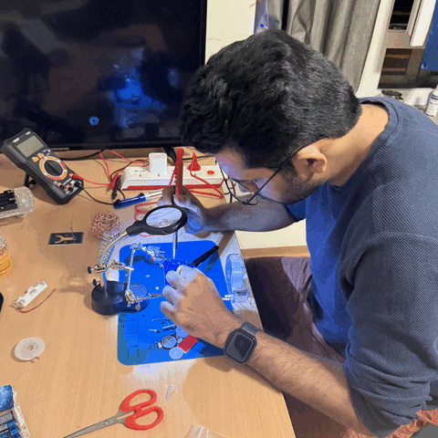

About Me
Hello! I am Devadas, a Master’s student in Electromobility specializing in Artificial Intelligence, Autonomous Systems, and Sustainability, and currently working part-time as a Robotics Research Assistant at the University of Technology Nuremberg (UTN). My interests lie in AI-driven robotics, autonomous navigation, and robotic manipulation. I enjoy working with both software and hardware, and as a hobby, I maintain a small personal robotics lab at home. I am always open to collaboration on robotics and AI projects.
ResumeExperience


Projects
Assistive Robot Simulation & Navigation

TOOLS & PLATFORMS: · ROS 2 · ZED 2i · Isaac Sim · Nav2 Stack
- Developed URDF robot models from CAD assemblies and validated multibody dynamics in NVIDIA Isaac Sim.
- Integrated a ZED 2i depth camera for perception and depth-based navigation using ROS 2 Nav2.
- Implemented autonomous indoor navigation with real-time obstacle avoidance.
Benchmarking 3D Bin-Picking Algorithms

TOOLS & PLATFORMS: · MuJoCo · Franka Emika · Optimization
- Benchmarked and evaluated 3D bin-picking algorithms in simulation using MuJoCo.
- Conducted structured evaluation experiments with the Franka Emika robot.
- Analyzed grasp success rate, robustness, and performance metrics.
Assistive Robot Object Picking (Ongoing)

TOOLS & PLATFORMS: · Isaac Lab · ROS 2 · VLA · RL
- Developed an assistive mobile manipulator in NVIDIA Isaac Sim and Isaac Lab.
- Performed teleoperation experiments to validate manipulation pipelines.
- Integrate Vision–Language–Action (VLA) models with autonomous navigation.
- Study sim-to-real transfer using real hardware experiments.
Autonomous Drone Flight & Real-time object detection

TOOLS & PLATFORMS: · YOLOv3 · Intel RealSense · OpenCV
- Implemented a YOLOv3-based object detection pipeline for autonomous drones.
- Used depth data from Intel RealSense for spatial validation .
- Validated performance using ROS bag testing and flight experiments.
Interactive Image Segmentation (SAM-2)


TOOLS & PLATFORMS: · SAM-2 · Hugging Face · Human-in-the-Loop
- Implemented interactive image segmentation using SAM-2 for FRANKA.
- Enabled human-in-the-loop object selection for robotic grasping.
- Demonstrated segmentation on multiple grocery items.
Home Robotics Lab & Prototyping
At home, I maintain a compact yet highly functional robotics lab where I design, build, and validate robotic systems from the ground up. The lab is equipped with an Anycubic 3D printer, embedded electronics and soldering tools, and NVIDIA Jetson developer kits, enabling rapid prototyping that bridges mechanical design, embedded control, and AI-driven perception. This environment allows me to iterate quickly from concept to working hardware while maintaining strong integration with ROS 2–based software pipelines.
Personal Robotics Prototyping Lab

TOOLS & ACTIVITIES: 3D Printer · Embedded Systems · Soldering · NVIDIA Jetson Dev Kit
- Prototyped custom robotic chassis through iterative 3D design and printing.
- Configured NVIDIA Jetson platforms for embedded AI and robotics workloads.
- Developed and integrated microcontroller-based subsystems through hardware programming and soldering.
Embedded Electronics & Soldering Experiments
- Designed and assembled embedded circuits using ESP32, TB6612 motor drivers, and regulated power supplies.
- Performed manual soldering, hardware bring-up, and systematic debugging.
- Developed miniature wheeled robots and simple manipulators for experimental validation.
Tools, Frameworks & Platforms
ROS 2 · Gazebo · Python
Isaac Sim · Isaac Lab
Autodesk Fusion 360
Microcontrollers (ESP32)
NVIDIA Jetson Dev Kit
ZED · Intel Depth Camera
MATLAB